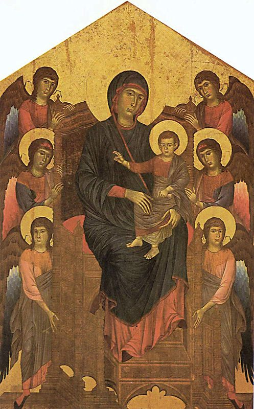
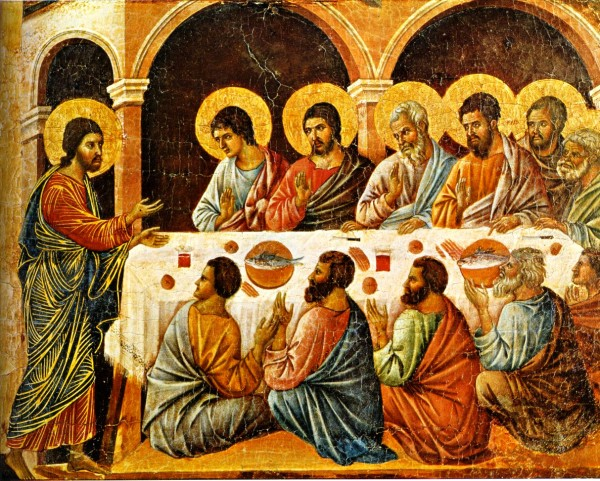
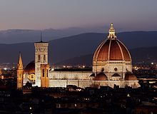
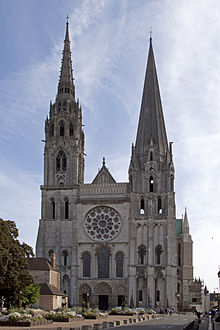
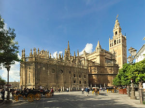
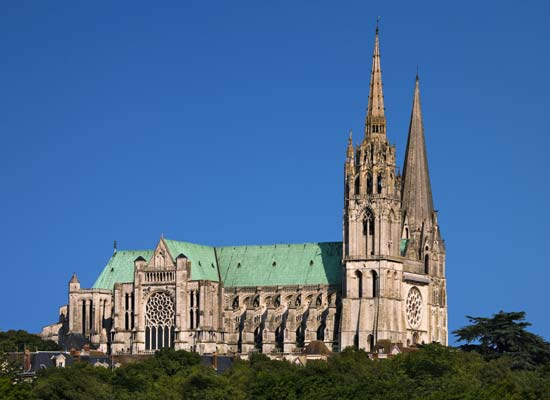

- Cimabue (1240-1302)
- Duccio di Buoninsegna (1255-1319)
- Giotto (1266-1337)
- Simone Martini (1284-1344)
- Cimabue
- 1283-1284
- Tempera on Panel
- Located:Uffizi Gallery
- Duccio di Buoninsegna
- 1308-1311
- Tempera on Panel
- Located: Museo dell'Opera Metropolitina del Duomo, Siena
- Giotto
- 1304-1305
- Fresco
- Arena Chapel, Padua
- Simone Martini
- 1342
- Tempera and gold leaf on wood panel
- Walker Art Gallery, Liverpool
Paintings
"Madonna Enthroned with Child "

"The Appearance of the Apostles"

"The Last Judgement"

"Christ Discovered in the Temple"
Architecture
Gothic architecture has three distinguishing factor: the pointed arch, the ribbed valut, and the flying buttress. The arch itself was derived from early Muslim architecture in the Near east. The ribbed vaults were adopted from the Romanesque Era, allowing architects to build higher cathedrals. The ribbed vaults are characterized by continuous arches of heavy columns forming the ceiling. To support all this weight, architects built structures on the outside of the buildings, protruding from the side of the building to the floor level, called buttresses. In 1093, The first building to incorporate all three of these distinguishing parts was the Durham Cathedral in North England.
| Building | Location | Year Completed |
|---|---|---|
| Cattedrale di Santa Maria del Fiore  | Florence, Tuscany- Italy | 1436 |
| Chatres Catherdral  | Chatres, France | 1220 |
| Seville Cathedral  | Seville, Andalusia- Spain | 1528 |
Modern Gothic Art
Find out more by clicking on the picture!
